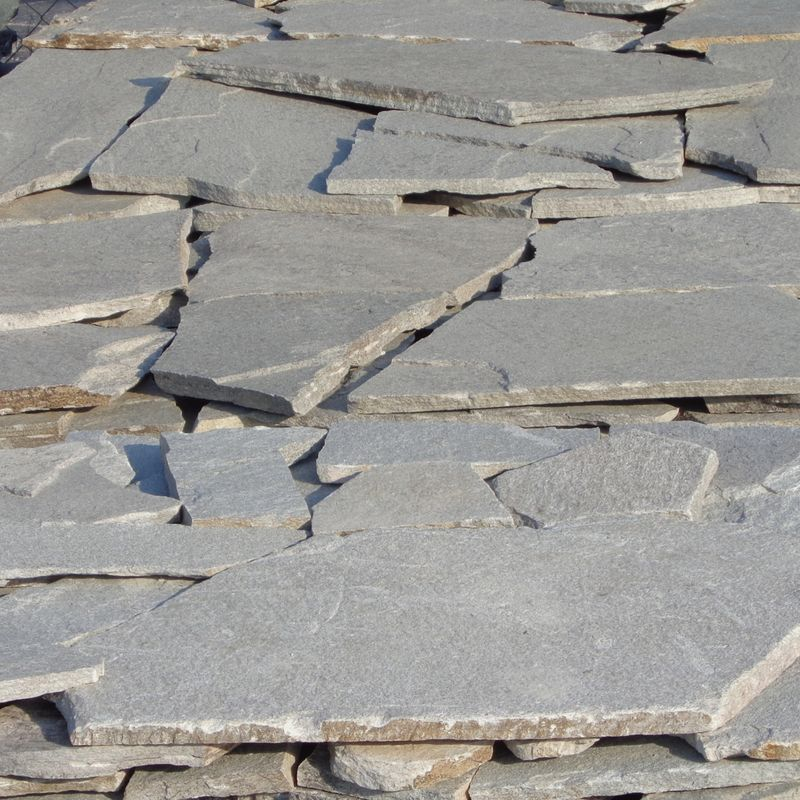
Сив
- Оформен
- 5 см10 см
- Неоформен
- едърдребен
Борса за камък и строителни материали ЕМ-13 с голямо разнообразие. Камък гнайс от Гоце Делчев и Ивайловградски гнайс.
Обадете се
Понеделник – Петък: 08:00 – 16:30 · Събота – Неделя: 08:00 – 12:30
Гнайсът е метаморфна скала, която се добива в Родопите и се отличава с голяма здравина, грапава нехлъзгаща се повърхност и издръжливост при температурни промени. Идеален е за външни настилки, стенни облицовки и декоративни цели.
Натиснете снимка, за да я видите голяма.

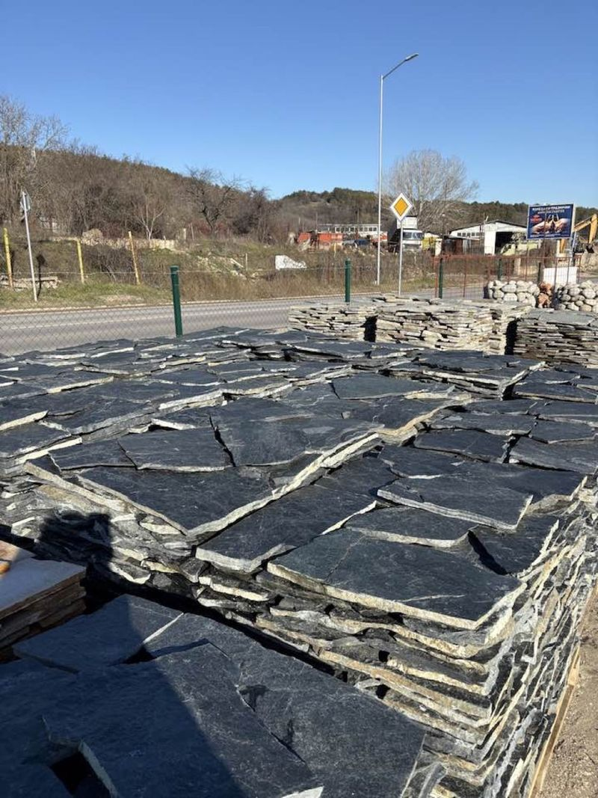
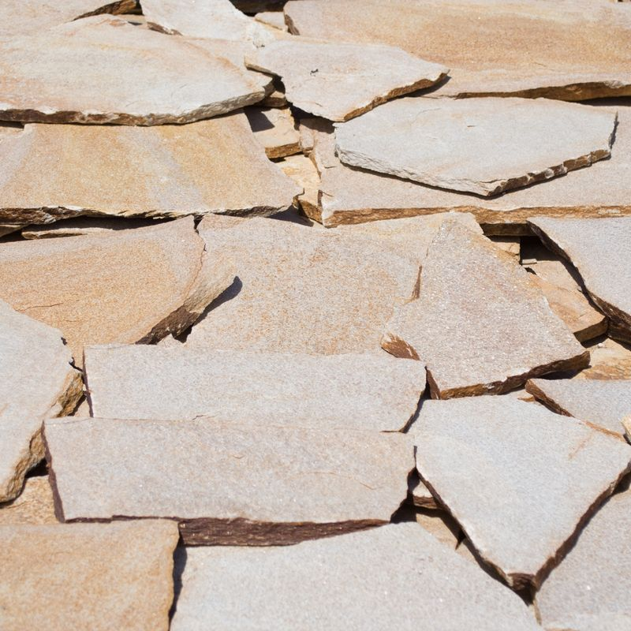
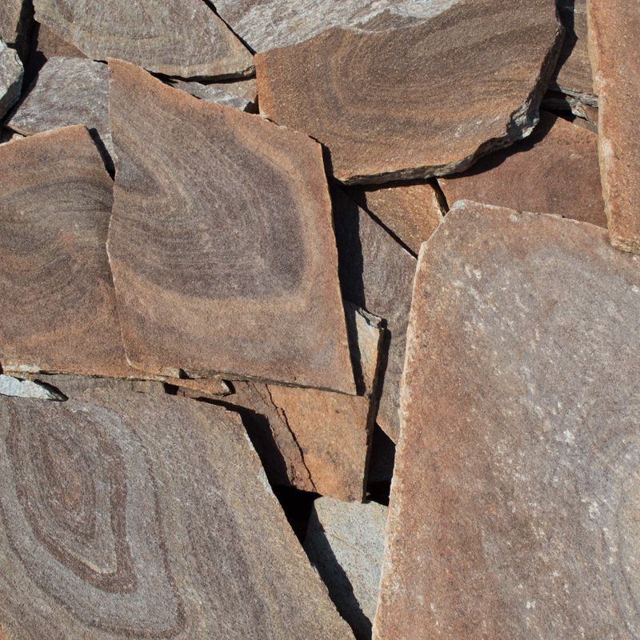
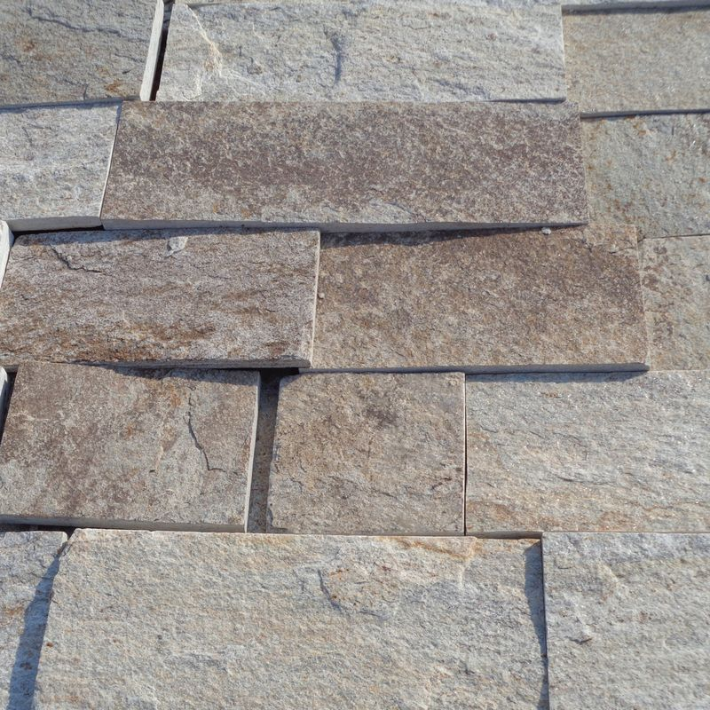

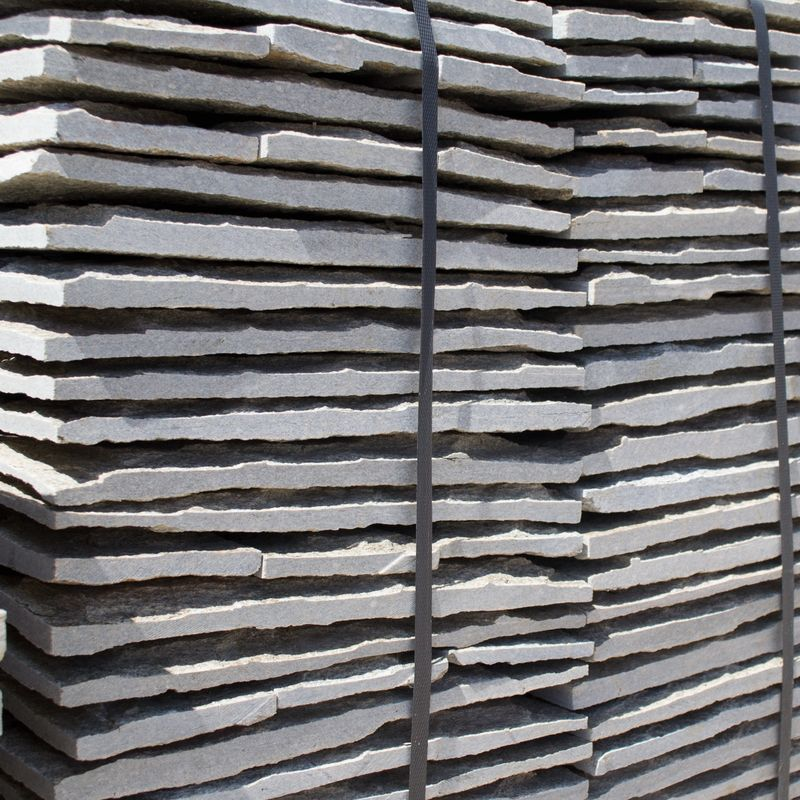
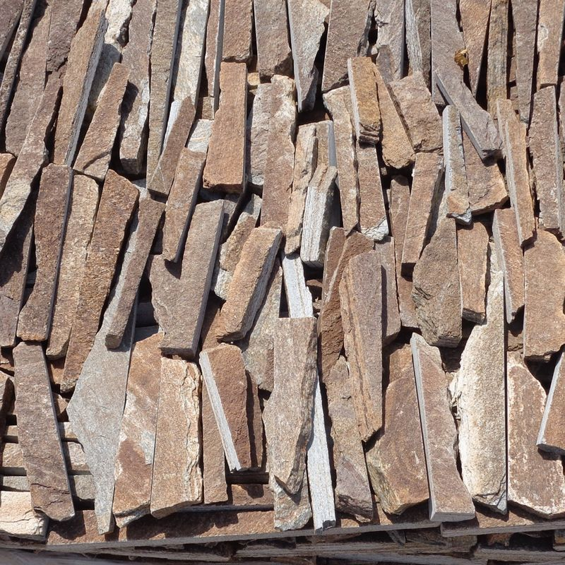
Предлага се: сив, бежов, жълт, зелен, кафяв.
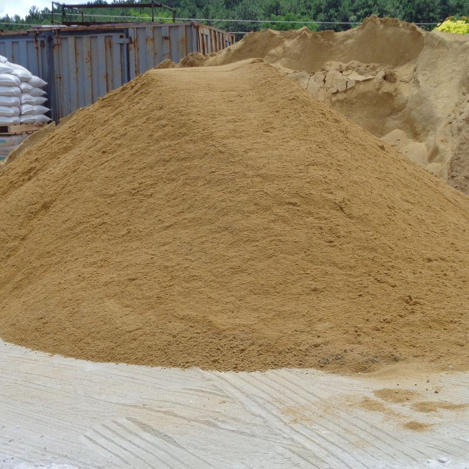
Предлага се на тон и на чували.
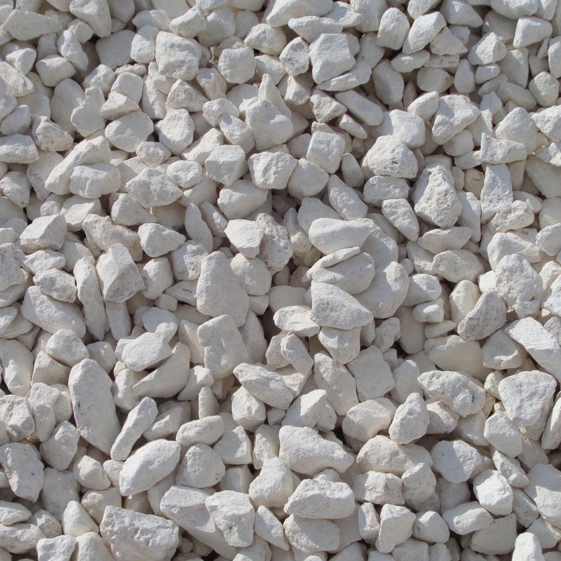
Фракции: 4/16 мм; 8/22 мм Каровча; 22/45 мм Едър.
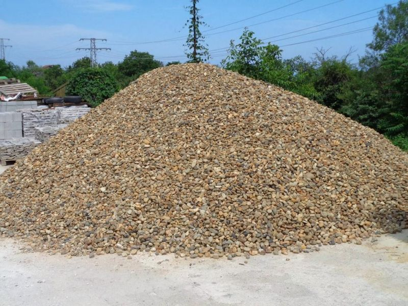
Фракции: 4/8 мм; 4/16 мм; 16/32 мм.
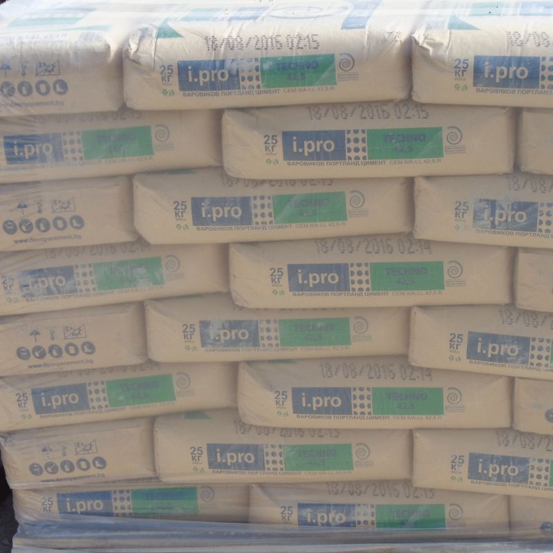
Варовиков Портланд цимент CEM II/A-L 42,5R и CEM II/B-L 32,5R.
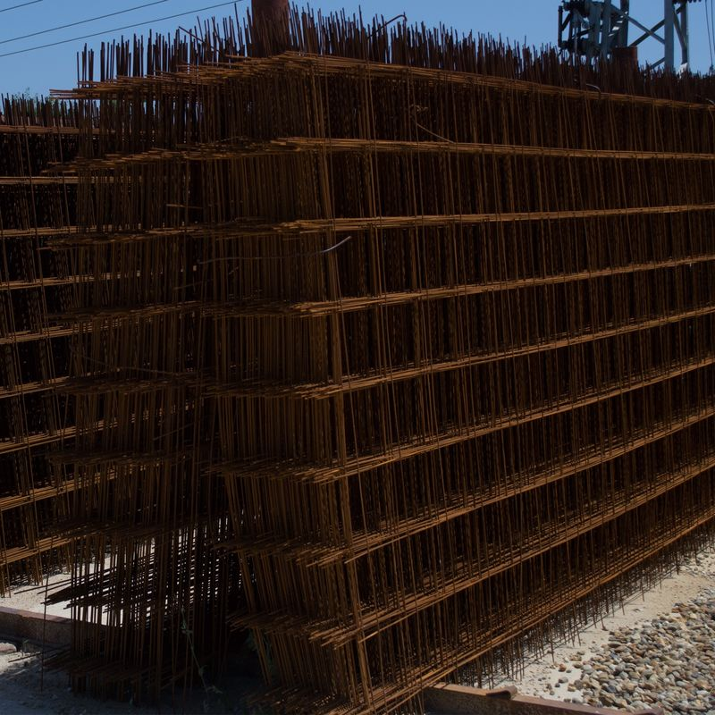
Електрозаварени мрежи с размери: дължина 4 м и ширина 2 м.
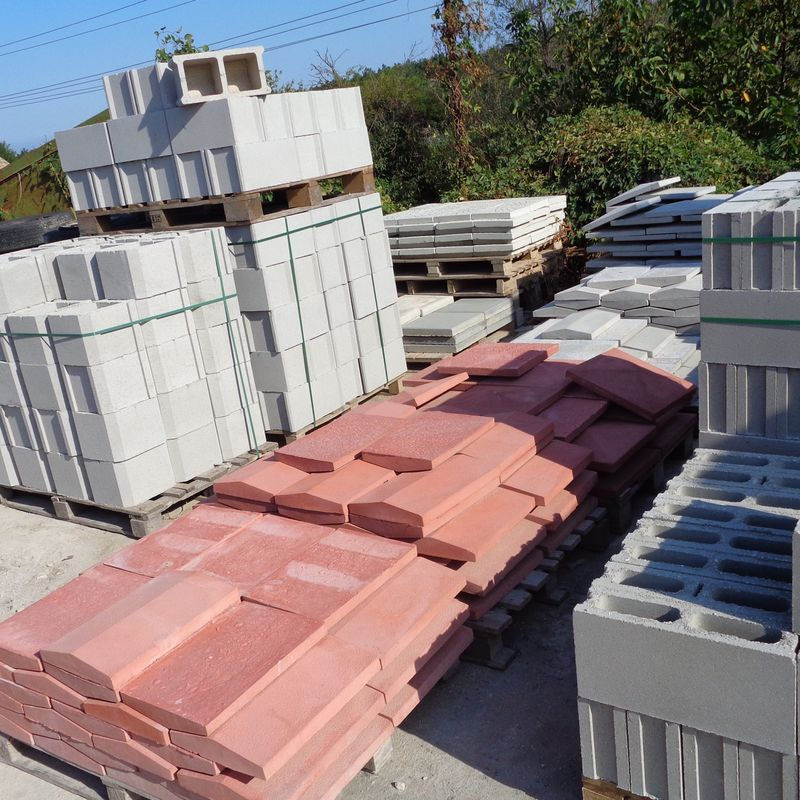
Фирма „ЕМ-13“ ООД разполага със собствен транспорт, тристранен самосвал до 3 тона.
0888 855 723Здравейте,
ЕМ-13 ООД продава предимно облицовъчен камък гнайс — оформен в различни размери и цветове, неоформен камък за облицовка и настилка, глиц и кокали. Камъкът е от Гоце Делчев и Ивайловград.
Ние заедно с вас, клиентите, сме №1, защото доволните клиенти са моята голяма награда за любовта, страстта и амбицията, с които работя, за да ви доставям най-добрата и качествена стока.
Емилия ЦаневаЕМ-13 ООД
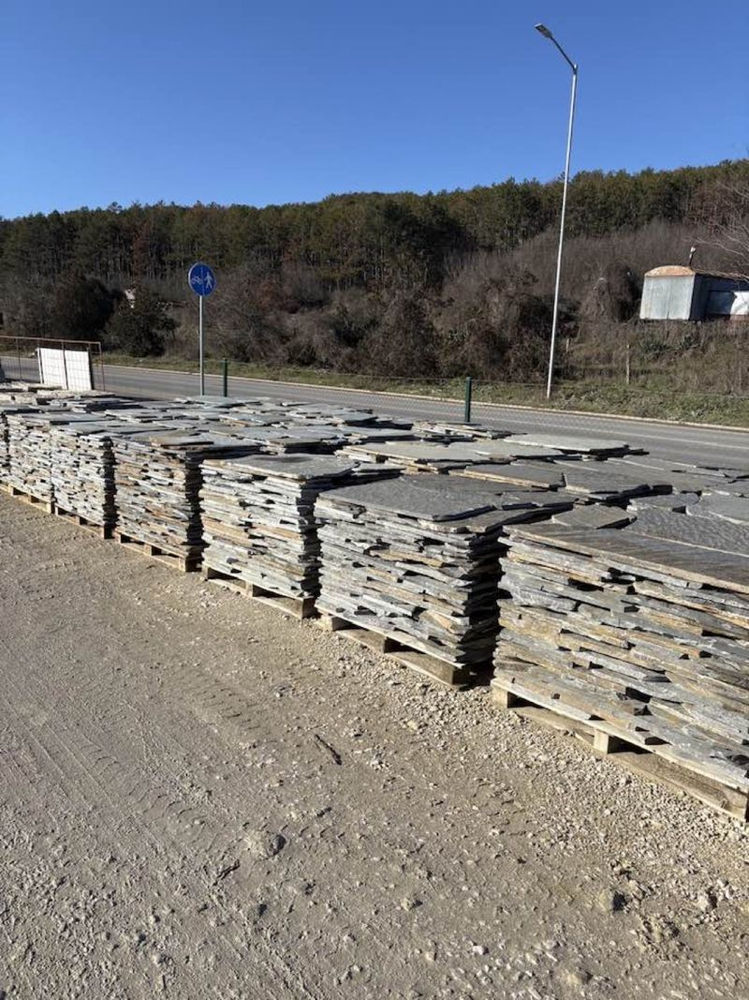